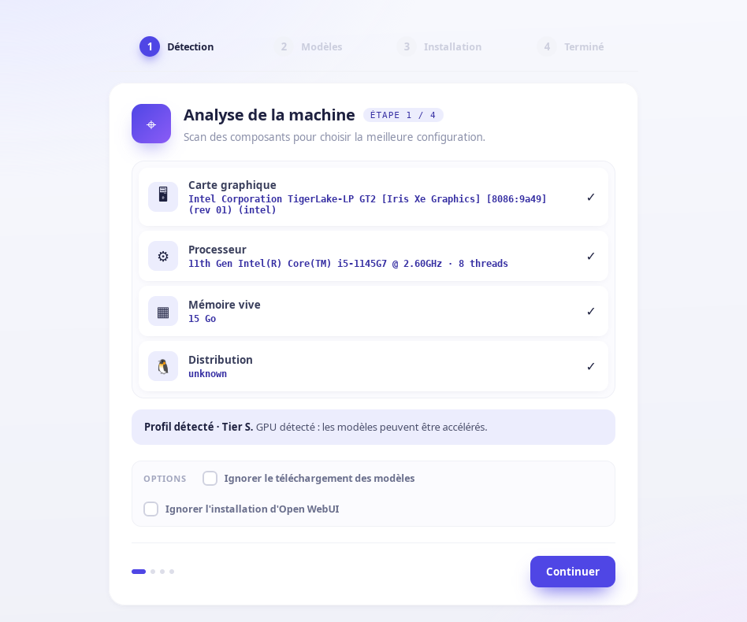
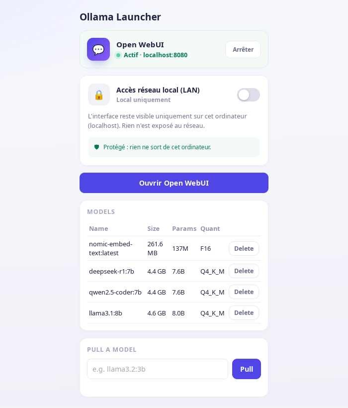
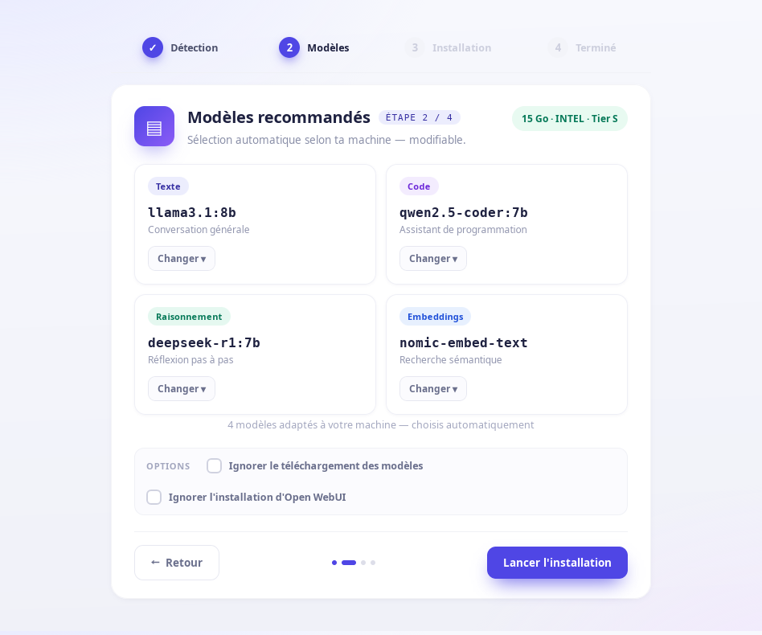

Installe Ollama, configure l'accélération GPU, télécharge des modèles adaptés à ta machine, et déploie Open WebUI — sur Linux ou Windows, avec ou sans interface graphique.



Ces captures viennent d'exécutions réelles de l'assistant et du launcher sur une vraie machine — pas de maquette : le GPU, le CPU, la RAM et les modèles affichés sont ceux réellement détectés.
Quatre scripts Bash, un script PowerShell, et deux apps de bureau optionnelles — rien de plus.
GPU (Nvidia/AMD/Intel via les IDs PCI, pas les noms commerciaux), RAM et distribution détectés pour choisir la bonne configuration et le bon tier de modèles.
Scripts Bash numérotés (Arch, Debian/Ubuntu, Fedora, openSUSE) et un script PowerShell natif pour Windows — deux implémentations indépendantes, pas un portage WSL.
Une app de bureau (Tauri) optionnelle pour l'installation initiale : détection, choix des modèles par usage, progression en direct — sans rien réimplémenter des scripts.
Ouvre Open WebUI, démarre/arrête le service, gère tes modèles, et partage l'accès réseau local par lien ou QR code — sans repasser par l'installateur.
Open WebUI n'écoute que sur 127.0.0.1 par défaut. L'accès réseau se bascule explicitement, avec un avertissement clair tant qu'aucun mot de passe n'est activé.
Suite de tests bats sur les vrais scripts, tests unitaires Rust sur la logique des deux apps, ShellCheck et clippy en CI sur chaque push.